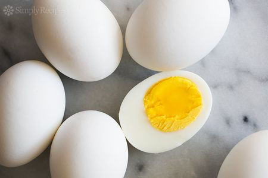

Boiled Eggs

Boiled eggs, are the health choice staple. An essential ingredient to the highly sought-after
man-titties, which
are incredible sought after by all men, everywhere.
The ability to make great hard-boiled eggs is a standard requirement of all respectible people, and included
here is a proven system to make great hard boiled eggs, everytime.
Ingredients
Steps
- Fill large pot (same lid used by egg pan) 3/4 with water
- Add 10 eggs to water-filled pot
- Turn stove heat to medium (4-6) with pot placed (set flame height to reach bottom of pot, but not be
climbing up the side of the pot)
- Wait for water to boil. Upon boil, set timer for 12 minutes, and turn off heat
- After 12 minut timer sounds, drain water from pot and replace the hot water just dumped, with cold water.
Set a timer for 1 minute.
- After timer sounds, dump water, and replace again with cold water. Set timer again for 1 minute.
- After timer sounds, dump water and begin egg peeling process. Remove egg and run under cold water, to make
egg as cold as possible for the purpose of breaking down the eggs exterior membrane layer.
- Put this egg into a coffe cup, and shake like you are playing Yahtzee and really need to role a 7. After
sufficient shaking remove the egg, and continue to thoroughly break the shell with thumb. Finish by peeling
the eggs outer layer apart. Try to peel the membrane off with the shell, for great results.
- Repeat from step 7, until all eggs are peeled.